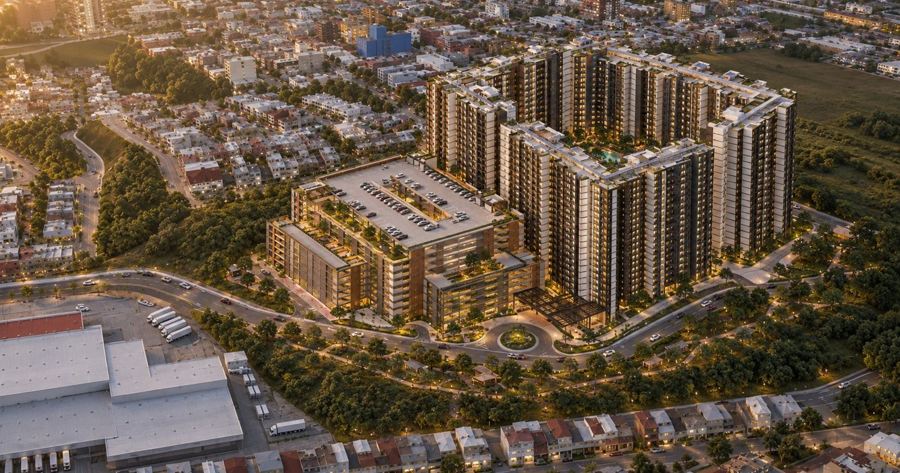

Desarrollos concebidos, estructurados y construidos por A2. El primero ya está en marcha.
Con este proyecto A2 sale al aire: la primera obra que desarrollamos con nombre propio, con cuatro décadas de experiencia detrás.

Villa Nueva es uno de los municipios de mayor crecimiento del área metropolitana. Vistas de San Miguel responde a esa demanda con vivienda pensada para quedarse.
934 unidades en un solo desarrollo: un proyecto que exige planificación urbana, estructura financiera sólida y una ejecución por etapas cuidadosa.
Es el primer proyecto que A2 lleva completo, de la compra de la tierra a la entrega de llaves, con el mismo equipo en cada fase.
Seguimos evaluando tierra y oportunidades en el área metropolitana. Cada nuevo proyecto pasa por el mismo filtro: suelo con potencial real, un producto pensado para quien lo va a vivir y una viabilidad que se sostiene en números.